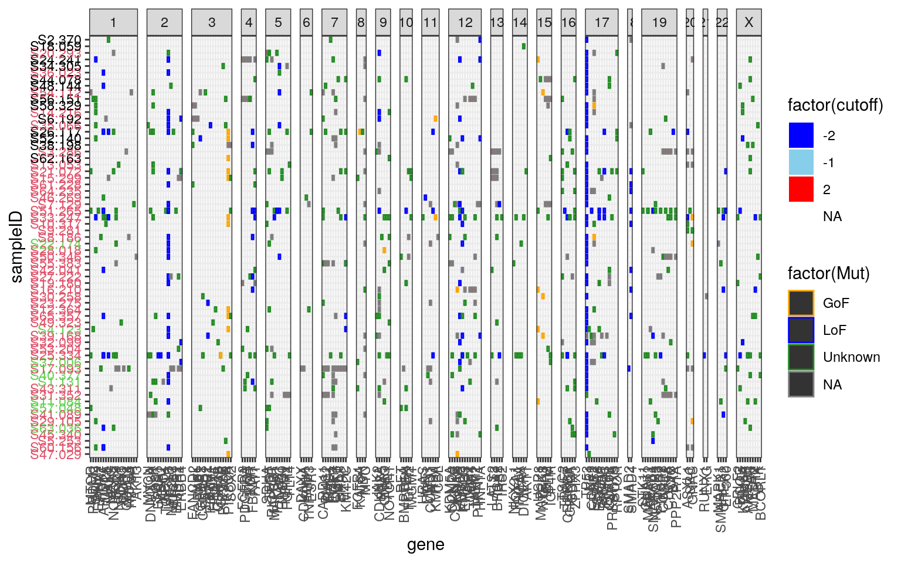
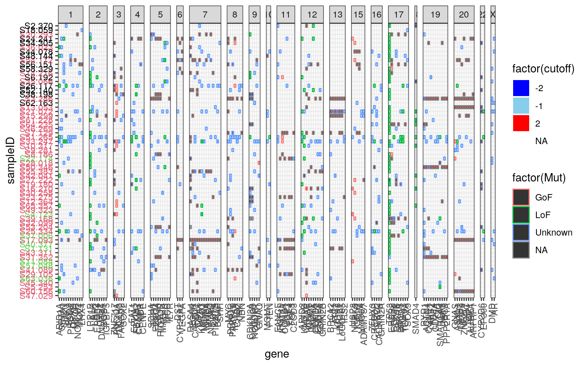
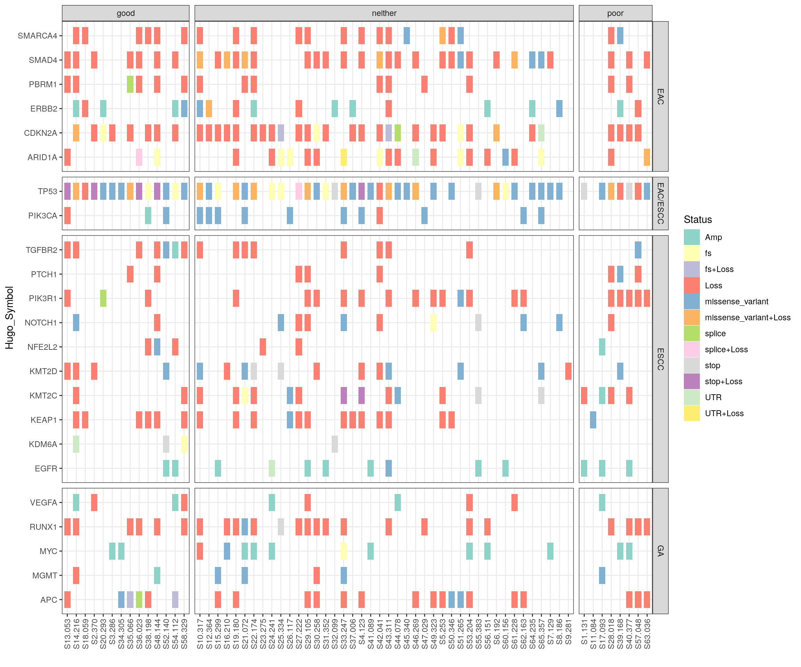
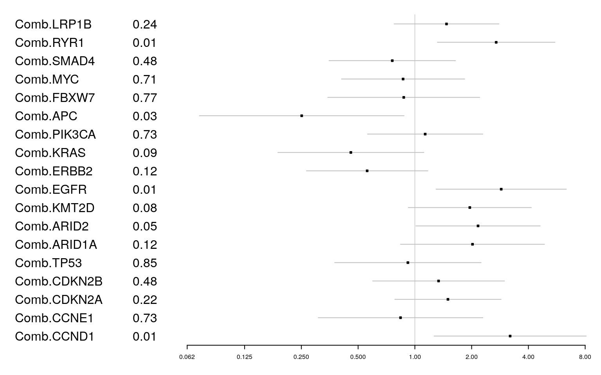
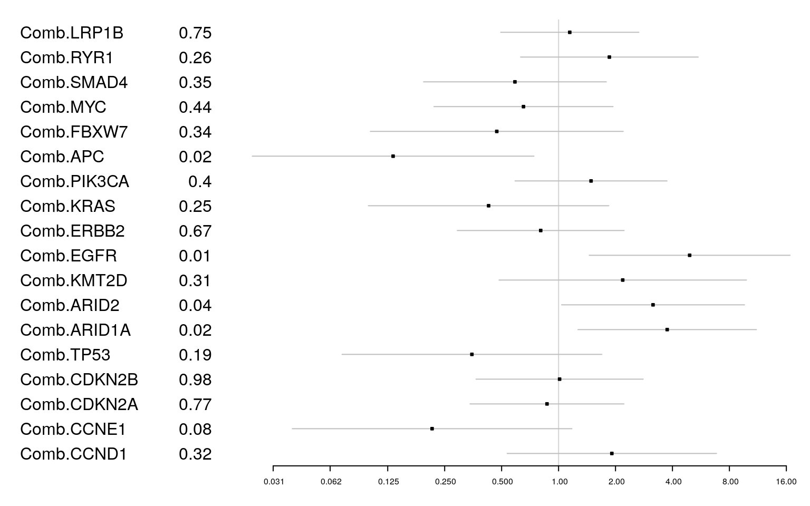
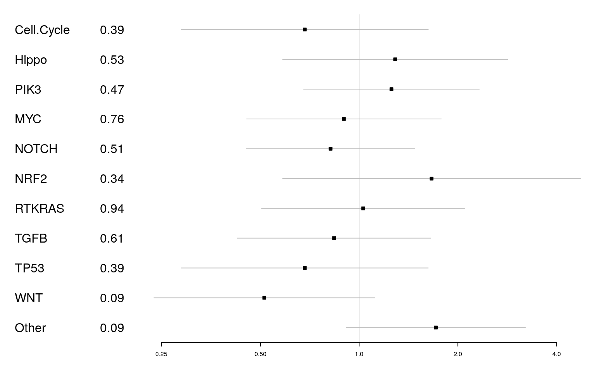
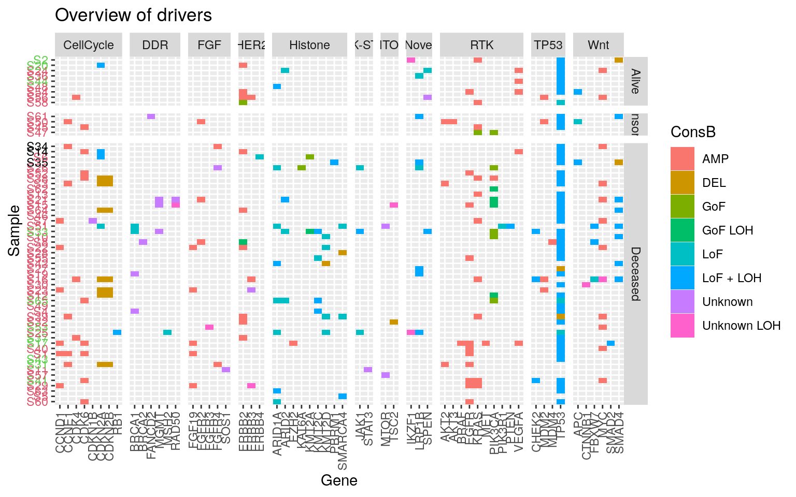
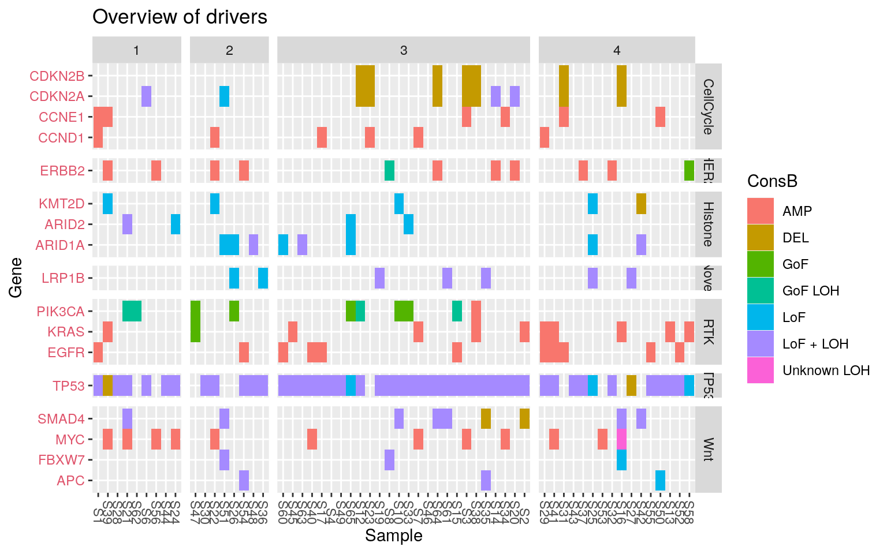

13 Pathway Analysis and Combined Genomic Assessment
This section integrates SNV and CNV data to visualize hallmark pathways and assess their impact on clinical outcome.
13.1 Combined alterations: Cosmic
Be conservative and use the CN cut-offs defined before (using homo deletions or amp) to categorise CNVs. Combine with SNV data to create the following plots:
AllDCNhiCI <- AllDCNGeneb[which(abs(AllDCNGeneb$cutoff) == 2 | AllDCNGeneb$cutoff == (-1)), ]
AllDCNhiCI$ind <- paste(AllDCNhiCI$sampleID, AllDCNhiCI$gene)
OutputC <- acast(AllDCNhiCI[, c("gene", "sampleID", "cutoff")], gene ~ sampleID)Mutations are annotated as such:
- mutation in coding region
- mutation in reg. region
mut2 <- do.call("c", Maf2GRangesFiltgnCod)
mut2$Mut <- 0
mut2$Mut[grep("UTR|splice", mut2$Consequence)] <- 1
mut2$Mut[grep("mis|stop|frameshift", mut2$Consequence)] <- mut2$Mut[grep("mis|stop|frameshift", mut2$Consequence)] + 2
mut2$ind <- paste(mut2$Samp, mut2$Gene)mut2 <- FinalSomaticList
mut2$ind <- paste(mut2$Tumor_Sample_Barcode, mut2$Hugo_Symbol)
mut2$Mut <- "Unknown"
mut2$Mut[which(mut2$DriverEffect == "LoF")] <- "LoF"
mut2$Mut[which(mut2$DriverEffect == "GoF")] <- "GoF"
# Filter mut2 to just coding regions
keepidx <- sapply(CodingVar, function(x) grep(x, mut2$Consequence))
mut2 <- mut2[unique(unlist(keepidx)), ]## merge the cnv and sv values here
Alldf <- merge(AllDCNhiCI[, c("gene", "mean", "cutoff", "chrom", "start.pos", "ind", "sampleID", "C")], mut2[, c("Hugo_Symbol", "Mut", "HGVSp_Short", "ind", "Tumor_Sample_Barcode", "VAF.TUMOR", "Consequence", "TSG_OCG", "DriverStatus", "CHROM", "POS", "loh", "gene_loh")], by.x = "ind", by.y = "ind", all = T)
Alldf$gene <- ifelse(is.na(Alldf$gene), as.character(Alldf$Hugo_Symbol), as.character(Alldf$gene))
Alldf$sampleID <- ifelse(is.na(Alldf$sampleID), as.character(Alldf$Tumor_Sample_Barcode), as.character(Alldf$sampleID))
Alldf$chrom <- ifelse(is.na(Alldf$chrom), as.character(Alldf$CHROM), as.character(Alldf$chrom))
Alldf$chrom <- factor(Alldf$chrom, levels = c(1:22, "X"))
Alldf$start.pos <- ifelse(is.na(Alldf$start.pos), Alldf$POS, Alldf$start.pos)
Alldf <- Alldf[order(Alldf$chrom, Alldf$start.pos), ]
Alldf$gene <- factor(Alldf$gene, levels = unique(Alldf$gene))
Alldf$Alive_edited <- SampleIDs$Alive_edited[match(Alldf$sampleID, SampleIDs$SAMPLE_ID)]
Alldf$sampleID <- factor(Alldf$sampleID, levels = c(S2$SAMPLE_ID))
Alldf <- Alldf[order(Alldf$sampleID), ]
Alldf$vartype <- "mut"
Alldf$vartype[which(Alldf$C > 3)] <- "gain"
Alldf$vartype[which(Alldf$C < 1)] <- "loss"
# Calculate combined LOH status (prioritize segment-level loh, fallback to gene_loh)
Alldf$loh_combined <- ifelse(!is.na(Alldf$loh) & Alldf$loh != "" & Alldf$loh != "FALSE", Alldf$loh, as.character(Alldf$gene_loh))
Alldf$vartype[which(!is.na(Alldf$loh_combined) & Alldf$loh_combined != "" & Alldf$loh_combined != "FALSE")] <- "LOH"
Alldf$vartype[which(Alldf$C > 3 & !is.na(Alldf$Mut))] <- "gain_mut"
Alldf <- Alldf[-which(Alldf$vartype == "mut" & is.na(Alldf$Mut)), ]
gfilt <- which(Alldf$gene %in% CmcHallmark$Gene.Symbol | Alldf$gene %in% unlist(TCGApathways) | Alldf$DriverStatus == "Driver")
Alldf2 <- Alldf[gfilt, ]
ggplot(Alldf2, aes(x = gene, y = sampleID, col = factor(Mut), fill = factor(cutoff))) +
geom_tile(width = 0.7, height = 0.7, size = 0.5) +
theme_bw() +
facet_grid(~chrom, scale = "free", space = "free") +
theme(axis.text.x = element_text(angle = 90, vjust = 0.5, hjust = 1), axis.text.y = element_text(color = S2$OutCol)) +
scale_fill_manual(values = c("blue", "skyblue", "red"), na.value = "white") +
scale_color_manual(values = c("orange", "blue", "forestgreen", "purple", "magenta", "red", "maroon"))
GeneImpact <- table(Alldf$gene)
GeneImpact3 <- GeneImpact[which(GeneImpact >= 5)]
GeneImpact3 <- GeneImpact3[-grep("[A-Z]{2}_[0-9]{3}", names(GeneImpact3))]
Alldf$sampleID <- factor(Alldf$sampleID, levels = S2$SAMPLE_ID)
Alldf$gene <- factor(Alldf$gene, levels = names(sort(GeneImpact, decreasing = T)))
gfilt <- which(Alldf$gene %in% names(GeneImpact3))
ggplot(Alldf[gfilt, ], aes(x = gene, y = sampleID, col = factor(Mut), fill = factor(cutoff))) +
geom_tile(width = 0.7, height = 0.7, size = 0.5) +
theme_bw() +
facet_grid(~chrom, scale = "free", space = "free") +
theme(axis.text.x = element_text(angle = 90, vjust = 0.5, hjust = 1), axis.text.y = element_text(color = S2$OutCol)) +
scale_fill_manual(values = c("blue", "skyblue", "red"), na.value = "white")
13.2 Common variants in EAC vs ESCC vs Gastric Cancer
EAClist <- c("ARID1A", "CDKN2A", "SMAD4", "SMARCA4", "PBRM1", "ERBB2", "SPG20", "TLR4", "ELMO1", "DOCK2")
ESCClist <- c("KDM6A", "KMT2C", "KMT2D", "NFE2L2", "ZNF750", "NOTCH1", "TGFBR2", "EGFR", "PIK3R1", "PTCH1", "KEAP1", "CUL3")
Both <- c("TP53", "PIK3CA")
GAlist <- c("CHFR", "MGMT", "APC", "ITGAV", "RUNX1", "FHIT", "MYC", "VEGFA", "RHOA")
Allg <- c(EAClist, Both, GAlist, ESCClist)
TCGAMut <- FinalSomaticList[which(FinalSomaticList$Hugo_Symbol %in% Allg), ]
rmThese <- c("synonymous_variant", "intron_variant", "inframe_deletion")
TCGAMut <- TCGAMut[which(!TCGAMut$Consequence %in% rmThese), c("Hugo_Symbol", "Consequence", "Tumor_Sample_Barcode", "loh")]
TCGAMut$VariantClass <- TCGAMut$Consequence
TCGAMut$VariantClass[grep("prime", TCGAMut$VariantClass)] <- "UTR"
TCGAMut$VariantClass[grep("stop", TCGAMut$VariantClass)] <- "stop"
TCGAMut$VariantClass[grep("frameshift", TCGAMut$VariantClass)] <- "fs"
TCGAMut$VariantClass[grep("splice", TCGAMut$VariantClass)] <- "splice"
TCGAMut <- TCGAMut[!duplicated(TCGAMut), ]
TCGAMut$Sample <- TCGAMut$Tumor_Sample_Barcode
TCGACNV <- AllDCNhiCI[which(AllDCNhiCI$gene %in% Allg), ]
TCGACNV$CNVClass <- ifelse(TCGACNV$cutoff == 2, "Amp", "Loss")
TCGACNV$Sample <- TCGACNV$sampleID
TCGACNV$Hugo_Symbol <- TCGACNV$gene
TCGACombined <- merge(TCGAMut, TCGACNV[, c("Hugo_Symbol", "Sample", "CNVClass")], by = c("Hugo_Symbol", "Sample"), all = TRUE)
TCGACombined$Status <- TCGACombined$VariantClass
TCGACombined$Status[is.na(TCGACombined$Status)] <- TCGACombined$CNVClass[is.na(TCGACombined$Status)]
TCGACombined$Status[!is.na(TCGACombined$VariantClass) & !is.na(TCGACombined$CNVClass)] <- paste0(TCGACombined$VariantClass[!is.na(TCGACombined$VariantClass) & !is.na(TCGACombined$CNVClass)], "+", TCGACombined$CNVClass[!is.na(TCGACombined$VariantClass) & !is.na(TCGACombined$CNVClass)])
TCGACombined$ER <- SampleIDs$Alive_edited[match(TCGACombined$Sample, SampleIDs$SAMPLE_ID)]
TCGACombined$Group <- "EAC"
TCGACombined$Group[TCGACombined$Hugo_Symbol %in% ESCClist] <- "ESCC"
TCGACombined$Group[TCGACombined$Hugo_Symbol %in% GAlist] <- "GA"
TCGACombined$Group[TCGACombined$Hugo_Symbol %in% Both] <- "EAC/ESCC"
ggplot(TCGACombined, aes(x = Sample, y = Hugo_Symbol, fill = Status)) +
geom_tile(width = 0.7, height = 0.7) +
facet_grid(Group ~ ER, space = "free", scale = "free") +
theme_bw() +
xlab("") +
theme(axis.text.x = element_text(angle = 90, vjust = 0.5, hjust = 1)) +
scale_fill_brewer(palette = "Set3", na.value = "white")
```13.3 Association with outcome
We assess each gene individually in a model which accounts for stage and age.
# Use indicator function
GenesOfInterest <- c(
"CCND1", "CCNE1", "CDKN2A", "CDKN2B", "TP53", "ARID1A", "ARID2", "KMT2D", "EGFR", "ERBB2", "KRAS", "PIK3CA", "APC", "FBXW7", "MYC", "SMAD4", "RYR1", "LRP1B"
)
SubdfAll <- Alldf[which(Alldf$gene %in% GenesOfInterest), ]
Subtab <- acast(SubdfAll, gene ~ sampleID)
Subtab <- Subtab[match(intersect(GenesOfInterest, rownames(Subtab)), rownames(Subtab)), ]
Subtab <- sign(Subtab)
Subtab <- data.frame(t(Subtab))
colnames(Subtab) <- paste("Comb.", colnames(Subtab), sep = "")
Subtab$Sample <- rownames(Subtab)
S2B <- merge(S2, Subtab, by.x = "SAMPLE_ID", by.y = "Sample")
Params <- grep("Comb", colnames(S2B), value = T)
allparam <- data.frame(Gene = character(), Coeff = numeric(), Lower = numeric(), Upper = numeric(), P = numeric(), Psum = numeric())
ss <- Surv(S2B$Follow.up.Survival..months., S2B$CensorStatus)
for (i in length(Params):1) {
ax <- coxph(ss ~ (S2B[, Params[i]] + S2B$Stage + S2B$Age.at.op), data = S2B, id = S2B$Name)
lx <- coefficients(summary(ax))
lx2 <- (summary(ax))$conf.int
Out <- data.frame(Gene = Params[i], Coeff = lx[1, 2], Lower = lx2[1, 3], Upper = lx2[1, 4], P = lx[1, 5], Psum = summary(ax)$logtest[3])
allparam <- rbind(allparam, Out)
}
allparam$Coeff <- as.numeric(allparam$Coeff)
allparam$Lower <- as.numeric(allparam$Lower)
allparam$Upper <- as.numeric(allparam$Upper)
allparam$P <- round(as.numeric(allparam$P), 2)
forestplot(allparam[, c("Gene", "P")], allparam$Coeff, allparam$Lower, allparam$Upper, xlog = T, boxsize = 0.1)
S2B_stage3 <- S2B[S2B$Stage == "3", ]
ss_stage3 <- Surv(S2B_stage3$Follow.up.Survival..months., S2B_stage3$CensorStatus)
Params <- grep("Comb", colnames(S2B_stage3), value = TRUE)
allparam_stage3 <- data.frame(Gene = character(), Coeff = numeric(), Lower = numeric(), Upper = numeric(), P = numeric(), Psum = numeric())
for (i in length(Params):1) {
ax_stage3 <- coxph(ss_stage3 ~ (S2B_stage3[, Params[i]] + S2B_stage3$Age.at.op), data = S2B_stage3, id = S2B_stage3$Name)
lx_stage3 <- coefficients(summary(ax_stage3))
lx2_stage3 <- summary(ax_stage3)$conf.int
Out_stage3 <- data.frame(Gene = Params[i], Coeff = lx_stage3[1, 2], Lower = lx2_stage3[1, 3], Upper = lx2_stage3[1, 4], P = lx_stage3[1, 5], Psum = summary(ax_stage3)$logtest[3])
allparam_stage3 <- rbind(allparam_stage3, Out_stage3)
}
allparam_stage3$Coeff <- as.numeric(allparam_stage3$Coeff)
allparam_stage3$Lower <- as.numeric(allparam_stage3$Lower)
allparam_stage3$Upper <- as.numeric(allparam_stage3$Upper)
allparam_stage3$P <- round(as.numeric(allparam_stage3$P), 2)
forestplot(allparam_stage3[, c("Gene", "P")], allparam_stage3$Coeff, allparam_stage3$Lower, allparam_stage3$Upper, xlog = TRUE, boxsize = 0.1)
13.4 Dysregulation of oesophagael pathways
ListNG <- list(
CIN = c("APC", "KRAS", "TP53", "SMAD4"),
DDR = c("MGMT", "APEX1", "BRCA1", "BRCA2", "RAD50", "ATM", "H2AX", "PALB2", "RAD52", "MRE11", "BRIP1", "BARD1", "RAD51D"),
WNT = c("CDH1", "LRP5", "LRP6", "CTNNB1", "AXIN1", "APC"),
RTK = c("EGFR", "ERBB2", "ERBB3", "ERBB4", "MET", "KRAS", "PIK3CA", "PIK3R1", "PTEN", "BRAF", "AKT2", "AKT3", "FGFR1", "FGFR2", "VEGFA", "IGF1R"),
SWISNF = c("ARID1A", "ARID2", "SMARCA4", "PBRM1", "JARID2"),
KMT = c("KMT2C", "KMT2D", "SET1A", "SET1B", "WDR5", "RBBP5", "ASH2L", "DPY30"),
G1S = c("CDKN2A", "CDKN2B", "CDK4", "CCND1", "CCNE1", "CDK6", "RB1"),
TGFB = c("TGFBR1", "TGFBR2", "ACVR1", "ACVR1B", "BMPR1A", "ZFYVE9", "SMAD1", "SMAD2", "SMAD7", "SMAD3", "SMAD4"),
Proliferation = c("MYC", "SMAD4", "SMAD2", "APC", "FBXW7", "CTNNB1", "PTCH1"),
NRF2 = c("NFE2L2", "KEAP1", "CUL3", "ATG7"),
RAC1 = c("ELMO1", "DOCK1", "RAC1", "RAC2", "TRIO", "VAV2", "ECT2", "TIAM1", "PAK1"),
TP53 = c("CDKN2A", "MDM4", "RPS6KA3", "MDM2", "TP53", "ATM", "CHEK2")
)ListVals <- sapply(SampleIDs$SAMPLE_ID, function(x) sapply(ListNG, function(y) length(which(Alldf$gene %in% y & Alldf$sampleID == x))))
m1 <- sign(ListVals[, match(S2$SAMPLE_ID, colnames(ListVals))])
S2temp <- cbind(S2, t(m1))
ss <- Surv(S2temp$Follow.up.Survival..months., S2temp$CensorStatus)
Params <- names(ListNG)
allparam_ng <- data.frame(Gene = character(), Coeff = numeric(), Lower = numeric(), Upper = numeric(), P = numeric(), Psum = numeric())
for (i in 1:length(Params)) {
ax <- coxph(ss ~ (S2temp[, Params[i]] + S2temp$Stage + S2temp$Age.at.op), data = S2temp, id = S2temp$Name)
lx <- coefficients(summary(ax))
lx2 <- (summary(ax))$conf.int
Out <- data.frame(Gene = Params[i], Coeff = lx[1, 2], Lower = lx2[1, 3], Upper = lx2[1, 4], P = lx[1, 5], Psum = summary(ax)$logtest[3])
allparam_ng <- rbind(allparam_ng, Out)
}
allparam_ng$Coeff <- as.numeric(allparam_ng$Coeff)
allparam_ng$Lower <- as.numeric(allparam_ng$Lower)
allparam_ng$Upper <- as.numeric(allparam_ng$Upper)
allparam_ng$P <- round(as.numeric(allparam_ng$P), 2)
forestplot(allparam_ng[, c("Gene", "P")], allparam_ng$Coeff, allparam_ng$Lower, allparam_ng$Upper, xlog = T, boxsize = 0.1)13.5 Pathway Mapper Summary
# CNV data
# Assuming CNVtable is available or needs to be constructed
# For now, using acast to get a gene by sample table of counts
CNVtable <- acast(AllDCNGeneb[, c("gene", "sampleID", "cutoff")], gene ~ sampleID)
Outputgains <- sapply(1:nrow(CNVtable), function(x) length(which(CNVtable[x, ] > 1)) / 64 * 100)
Outputloss <- sapply(1:nrow(CNVtable), function(x) length(which(CNVtable[x, ] < (-1))) / (-64) * 100)
dfcnv <- data.frame(Gene = rownames(CNVtable), gain = Outputgains, loss = Outputloss)
# Mutation data frequency
df_mut_freq <- as.data.frame(table(mut2$Hugo_Symbol))
colnames(df_mut_freq) <- c("Gene", "Count")
df_mut_freq$LundEAC <- (df_mut_freq$Count / 64) * 100
PWData <- df_mut_freq %>%
dplyr::select(Gene, mut = LundEAC) %>%
dplyr::full_join(dfcnv, by = "Gene") %>%
dplyr::mutate(across(where(is.numeric), ~ replace(., is.na(.), 0)))
write.table(PWData, file = "output/pathway_mapper.txt", sep = "\t", quote = F, row.names = F)13.6 Proposed new pathway-mapper chunk
# n=64 is the total number of patients in the cohort
n_patients <- 64
# Mutation frequency from mut2 (official count)
df_mut_freq <- as.data.frame(table(mut2$Hugo_Symbol))
colnames(df_mut_freq) <- c("Gene", "Count")
df_mut_freq$mut <- (df_mut_freq$Count / n_patients) * 100
# Gain/Loss frequency from Alldf (patient-based)
df_cnv_freq <- Alldf %>%
group_by(gene) %>%
summarise(
gain = n_distinct(sampleID[vartype %in% c("gain", "gain_mut")]) / n_patients * 100,
loss = n_distinct(sampleID[vartype %in% c("loss", "LOH")]) / n_patients * 100
)
# Combine datasets for Pathway Mapper
PWData <- df_mut_freq %>%
dplyr::select(Gene, mut) %>%
dplyr::full_join(df_cnv_freq, by = c("Gene" = "gene")) %>%
dplyr::mutate(across(where(is.numeric), ~ replace(., is.na(.), 0)))
write.table(PWData, file = "output/pathwaymapper-new.txt", sep = "\t", quote = F, row.names = F)13.7 TCGA Pathway Outcome Association
ListVals <- sapply(SampleIDs$SAMPLE_ID, function(x) sapply(TCGApathways, function(y) length(which(Alldf$gene %in% y & Alldf$sampleID == x))))
m1 <- sign(ListVals[, match(S2$SAMPLE_ID, colnames(ListVals))])
S2temp <- cbind(S2, t(m1))
ss <- Surv(S2temp$Follow.up.Survival..months., S2temp$CensorStatus)
Params <- colnames(t(m1))
allparam_path <- data.frame(Gene = character(), Coeff = numeric(), Lower = numeric(), Upper = numeric(), P = numeric(), Psum = numeric())
for (i in 1:length(Params)) {
ax <- coxph(ss ~ (S2temp[, Params[i]] + S2temp$Stage + S2temp$Age.at.op), data = S2temp, id = S2temp$Name)
lx <- coefficients(summary(ax))
lx2 <- (summary(ax))$conf.int
Out <- data.frame(Gene = Params[i], Coeff = lx[1, 2], Lower = lx2[1, 3], Upper = lx2[1, 4], P = lx[1, 5], Psum = summary(ax)$logtest[3])
allparam_path <- rbind(allparam_path, Out)
}
allparam_path$Coeff <- as.numeric(allparam_path$Coeff)
allparam_path$Lower <- as.numeric(allparam_path$Lower)
allparam_path$Upper <- as.numeric(allparam_path$Upper)
allparam_path$P <- round(as.numeric(allparam_path$P), 2)
forestplot(allparam_path[, c("Gene", "P")], allparam_path$Coeff, allparam_path$Lower, allparam_path$Upper, xlog = T, boxsize = 0.1)
13.8 Driver Genes
Hello
ListNG <- c(ListNG, list(
FGF = c("SOS1", "PTPN11", "GAB1", "PLCG1", unique(DriverEvents$Gene[grep("FGF", DriverEvents$Gene)])),
ERBB2 = c("ERBB2", "ERBB3", "ERBB4")
))
Nx2 <- sapply(ListNG, function(x) which(DriverEvents$Gene %in% x))
# Color code variants according to pathways
Tx2=rep(NA, nrow(DriverEvents))
Tx2[unlist(Nx2$CIN)]="CIN"
Tx2[unlist(Nx2$TP53)]="TP53"
Tx2[unlist(Nx2$DDR)]="DDR"
Tx2[unlist(Nx2$RTK)]="RTK"
Tx2[unlist(Nx2$SWISNF)]="Histone"
Tx2[unlist(Nx2$KMT)]="Histone"
Tx2[unlist(Nx2$G1S)]="CellCycle"
Tx2[unlist(Nx2$Proliferation)]="Wnt"
Tx2[unlist(Nx2$FGF)]="FGF"
Tx2[unlist(Nx2$ERBB2)]="HER2"
Tx2[which(DriverEvents$Gene%in%MMRgenes)]="DDR"
DriverEvents$Pathway=Tx2
DriverEvents$ConsB[which(DriverEvents$ConsB=="Unknown-novel")]="Unknown"
DriverEvents$Pathway[which(DriverEvents$Cons=="Unknown-novel")]="Novel"
DriverEvents$Pathway[which(DriverEvents$Gene%in%c("TSC2", "KATA6", "IKZF1", "SPEN", "RYR1", "LRP1B", "RYR3"))]="Novel"
DriverEvents$Pathway[which(DriverEvents$Gene%in%c("JAK1", "JAK2", "STAT1", "STAT2", "STAT3"))]="JAK-STAT"
DriverEvents[which(DriverEvents$Gene%in%c("EZH2","KAT6A")), "Pathway"]="Histone"
DriverEvents[grep("FANC", DriverEvents$Gene), "Pathway"]="DDR"
DriverEvents[grep("^FGF", DriverEvents$Gene), "Pathway"]="FGF"
DriverEvents[grep("KMT", DriverEvents$Gene), "Pathway"]="Histone"
DriverEvents[grep("CDKN", DriverEvents$Gene), "Pathway"]="CellCycle"
DriverEvents[grep("MTOR", DriverEvents$Gene), "Pathway"]="MTOR"
DriverEvents[grep("TSC", DriverEvents$Gene), "Pathway"]="MTOR"
DriverEvents$Sample <- sapply(strsplit(as.character(DriverEvents$L1), "\\."), function(x) x[1])
DriverEvents$Sample <- factor(DriverEvents$Sample, levels = (S2$Name))
DriverEvents$Stage <- S2$Stage[match(DriverEvents$L1, S2$SAMPLE_ID)]
DriverEvents$ConsB[which(DriverEvents$ConsB %in% c("GoF AMP", "Gain-of-function Amp"))] <- "GoF AMP"
DriverEvents$ConsB[which(DriverEvents$ConsB %in% c("GoF LOH", "Gain-of-function LOH"))] <- "GoF LOH"
DriverEvents$ConsB[which(DriverEvents$ConsB %in% c("LoF DEL", "LoF LOH", "Loss-of-function Del", "Loss-of-function LOH"))] <- "LoF + LOH"
ggplot(DriverEvents[which(!is.na(DriverEvents$Pathway)), ], aes(x = Gene, y = Sample, fill = ConsB)) +
geom_tile() +
facet_grid(Alive_edited ~ Pathway, space = "free", scale = "free") +
theme(axis.text.x = element_text(angle = 90, vjust = 0.5, hjust = 1), axis.text.y = element_text(color = S2$OutCol)) +
ggtitle("Overview of drivers")
Glist <- c("CDKN2A", "CDKN2B", "CCNE1", "CCND1", "MYC", "KRAS", "EGFR", "ERBB2", "TP53", "APC", "ARID1A", "ARID2", "KMT2D", "SMAD4", "FBXW7", "PIK3CA", "RYR1", "LRP1B")
ggplot(DriverEvents[which(DriverEvents$Gene %in% Glist), ], aes(x = Sample, y = Gene, fill = ConsB)) +
geom_tile() +
facet_grid(Pathway ~ Stage, space = "free", scale = "free") +
theme(axis.text.x = element_text(angle = -90, vjust = 0.5, hjust = 1), axis.text.y = element_text(color = S2$OutCol)) +
ggtitle("Overview of drivers")
13.9 Ontology Analysis
# Ontology analysis using EGSEA
library(org.Hs.eg.db)
library(EGSEA)
xx <- as.list(org.Hs.egSYMBOL)
genemap <- select(org.Hs.eg.db, keys = unique(DriverEvents$Gene), columns = c("ENTREZID", "SYMBOL"), keytype = "SYMBOL")
gs.annots <- buildIdx(entrezIDs = genemap$ENTREZID, species = "human", msigdb.gsets = "c2")
gsa <- egsea.ora(geneIDs = genemap$ENTREZID, logFC = NULL, universe = names(xx), gs.annots = gs.annots, minSize = 10, display.top = 30, report = T, report.dir = "./egsea-ora-report-all")